ADMINISTRATOR PORTAL
Operations guide, policy configuration parameter list, and management protocols.
1. Work Policy Configuration (Settings)
The system policies dictate how worked hours, overtime, holidays, geofences, and camera verifications behave. Admins must configure these values to align with employee contracts.
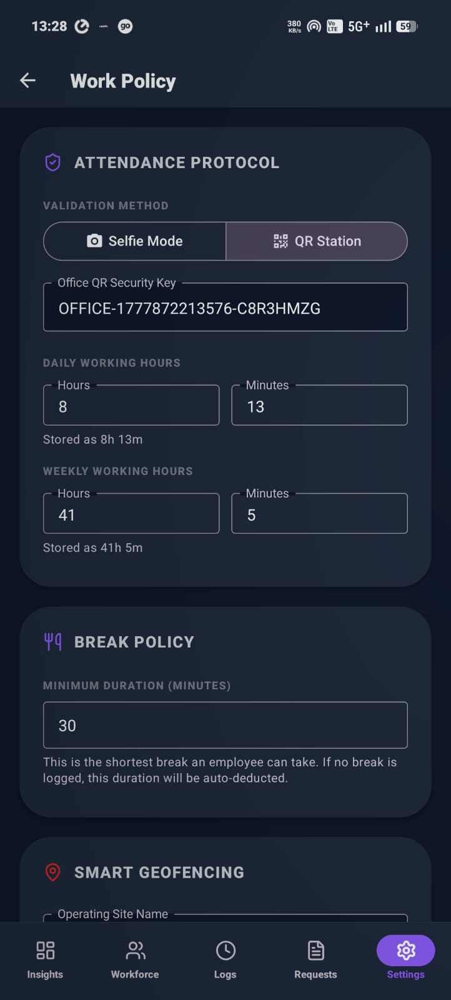
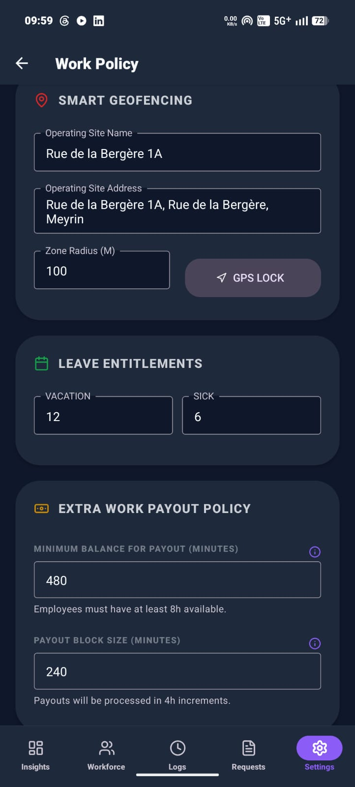
Configuration Parameter Guide
| Setting Name | Technical Key | Type/Range | Operational Description |
|---|---|---|---|
| Daily Work Target | dailyMinutes | Minutes (e.g., 493) | Standard daily target for 100% full-time staff (493 min = 8 hours 13 minutes). Target changes proportionally for part-timers. |
| Weekly Work Target | weeklyMinutes | Minutes (e.g., 2465) | Weekly target accumulated hours basis (usually 5 × Daily Target). |
| Attendance Mode | attendanceMode | selfie / qr | selfie requires a front-facing camera verification check-in. qr requires scanning the physical office QR beacon. |
| Schedule Mode | scheduleMode | shift / flexible | shift enforces strict check-in windows and marks late entries. flexible allows checks anytime during the calendar day. |
| Office QR Beacon Value | qrCodeValue | String Text | The exact token encoded inside the physical office QR sticker. The app validates this code during check-ins. |
| Clock-In Window Start | clockInWindowStart | Minutes from midnight | The earliest time employees can log check-in (e.g., 360 = 6:00 AM). In flexible mode, this is not enforced. |
| Clock-In Window End | clockInWindowEnd | Minutes from midnight | In shift mode, checking in after this limit (e.g., 600 = 10:00 AM) automatically marks the employee as Late. |
| Earliest Clock-Out | clockOutEarliest | Minutes from midnight | Prevents employees from clocking out early (e.g., 900 = 3:00 PM) unless they have an approved emergency leave request. |
| Overtime Grace Period | overtimeGraceMinutes | Minutes (e.g., 60) | Buffer time after target shift ends before overtime begins accumulating (e.g., 60 min grace means overtime starts at Hour 9). |
| Lunch Break Window | lunchBreakStart / End | Minutes from midnight | The time window where taking a break is allowed (e.g., 11:30 AM to 12:30 PM). In flexible mode, breaks can be taken anytime. |
| Minimum Break Duration | lunchMinimumMinutes | Minutes (e.g., 3) | To prevent accidental clicks, the manual break must stay active for at least this duration before it can be ended. |
| Office Coordinates | locationLatitude / Longitude | Floating point coordinates | The exact coordinates of the physical workspace center. Used to evaluate and prevent remote clock-ins. |
| Geofence Radius | locationRadius | Meters (e.g., 500) | The allowed radius around the office coordinates inside which employees must be located to log attendance successfully. |
| Annual Vacation Days | vacationLeaveTotal | Days (e.g., 12) | Default annual vacation balance credited to new employee registries. |
| Annual Sick Days | sickLeaveTotal | Days (e.g., 6) | Default annual sick leave balance. |
| Payout Minimum Credit | minPayoutMinutes | Minutes (e.g., 480) | Minimum credit accumulated in the Time Bank ledger before an employee can request a cash payout. |
| Payout Increment Block | payoutBlockMinutes | Minutes (e.g., 240) | The block size in which payouts must be requested (e.g., blocks of 4 hours). |
2. Live Command Dashboard
The dashboard displays real-time statistics regarding workforce attendance, quick action shortcuts, and an interactive activity timeline.
Overview Metrics:
- Workforce Health: Shows the percentage of present employees relative to total staff. An active green badge indicates real-time synchronization.
- Staff/Member: Shows the total number of staff/members registred in the organization.
- Present Today: The number of employees currently checked in. Clicking this lists present members.
- Payout Request: The number of employees who have requested a payout for their accumulated overtime.
- Pending Leaves: Displays active vacation/sick/comp-off requests awaiting administrative approval.
Communications & Logs timeline:
Below the quick cards, a real-time chronological activity timeline logs events: clock-ins, clock-outs, break alerts, and pending approvals. Tap **View All** to navigate to audit logs.
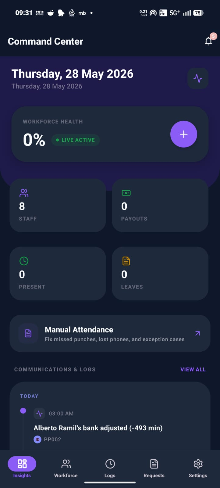
3. Workforce Control (Member Directory)
Manage employee registrations, designate roles, configure custom contract percentages, and adjust leave allowances.
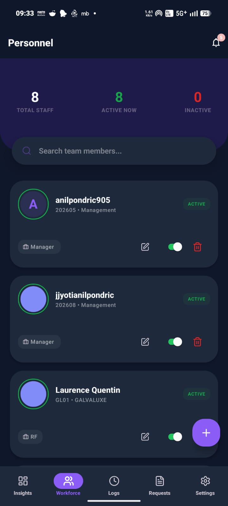
Employee Listing Directory
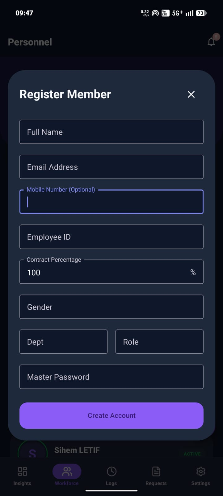
Register Employee Form
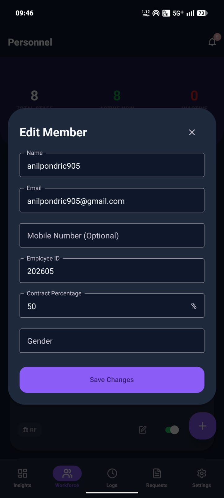
Edit Member Panel
Step-by-Step member creation:
- Navigate to the **Workforce** page and tap the **Plus (+)** button.
- Enter the employee's **Full Name**, **Email**, **Phone**, and designate a unique **Employee ID**.
- Set the **Contract Percentage**: Set to 100 for full-time staff or adjust (e.g., 50, 80) for part-time staff. The daily/weekly shift targets are computed proportionally.
- Save changes. The system automatically credits holiday accounts and generates default leave balance parameters.
4. Manual Attendance Correction
When an employee experiences physical device loss, GPS sync issues, or forgets to log their shift, admins can manually override or create attendance logs.
How to enter manual attendance:
- Navigate to **Manual Attendance**.
- Select the target **Employee** from the dropdown and select the **Date** on the calendar.
- Input the correct **Clock In** and **Clock Out** times.
- Enter the **Break/Lunch Minutes**:
- Leave Blank: The system defaults to the organization's standard 30-minute unpaid break.
- Enter Minutes: Specify custom break durations (e.g., 60 minutes) to deduct from total worked time.
- Write a brief explanation in the **Reason** field (e.g., "Forgot to check out").
- Tap **Submit Attendance Entry**.
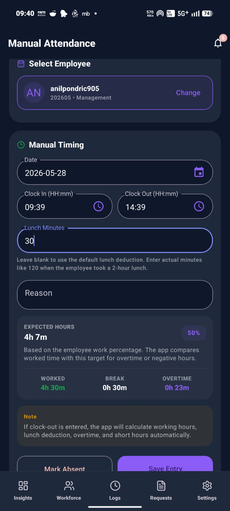
5. Employee Details & Device Security Control
To prevent buddy-punching and clock-in fraud, the LMS binds each employee to a single hardware device. Logging check-ins from other devices triggers security alerts.
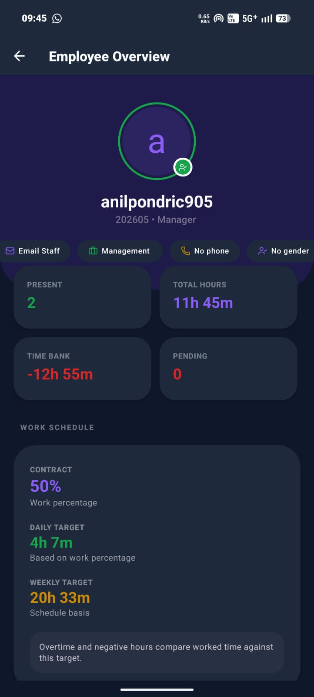
Overview & Device Settings
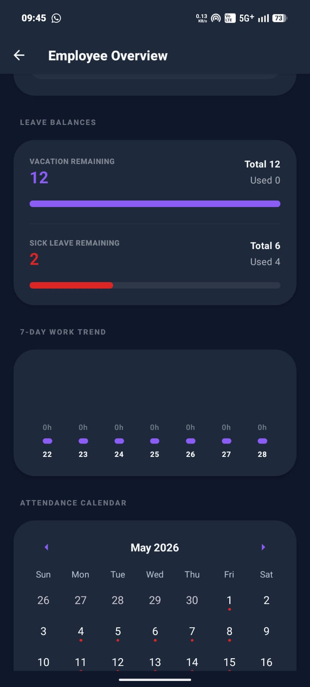
Contracts & Balances

Calendar logs & Trends
Auditing Device Mismatches:
- When an unrecognized device attempts check-in, an alert appears.
- Navigate to the employee's detail view in the admin portal.
- The **Security: Device Authorization** block highlights details of the unrecognized device (IP address, hardware model, last seen timestamp).
- Choose to:
- Register Device as Primary: Overrides settings, setting the new device as the employee's authorized clock-in device.
- Ignore & Require Verification: Flags future attempts and requires further verification.
6. System Audit Logs
Transparency is maintained via the System Logs timeline. Every administrative override, manual check-in adjustment, break alert, and time balance edit creates a timestamped record indicating which administrator performed the action.
Audit Capabilities:
- Tracks identity changes and manual entries.
- Chronological historical records filtered by dates.
- Immutable database auditing.
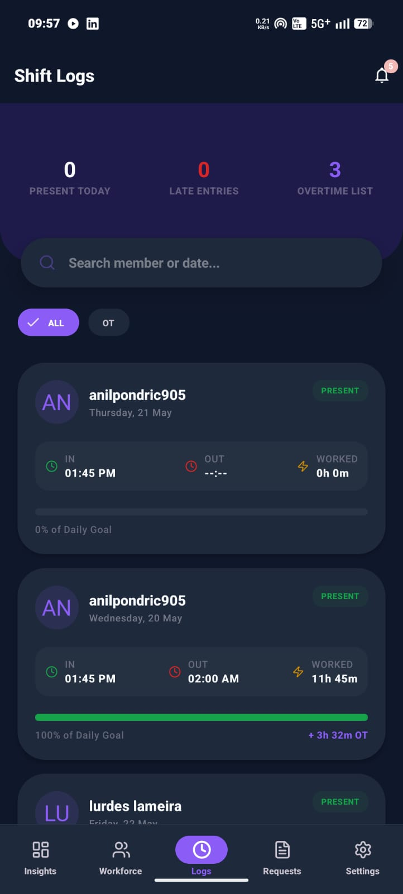
7. PDF Report Generation & Print Evidence
From the Employee Detail page, admins can generate official documents for payroll audits or verification checks.
Clicking **Export PDF** generates a formatted document summarizing worked duration, target hours, holiday credits, and Time Bank ledgers. These documents can be printed directly from the mobile app or shared with payroll managers.
EMPLOYEE PORTAL
Mobile app check-in guide, lunch tracking, leave submission, and balance checks.
8. Account Login & Authentication
Employees log in using credentials provided by their system administrator.
Login steps:
- Launch the **Workforce LMS** app.
- Enter your designated **Employee ID** or Email.
- Enter your **Password**.
- Tap **Sign In**.
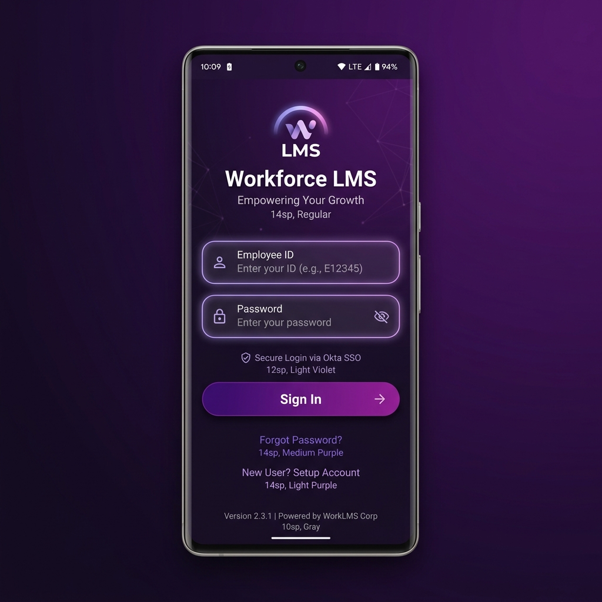
9. Dashboard & Shift Clock Action
The Home Page provides access to shift controls, working hour progress, geofence confirmation, and break tracking.
Workday Step-by-Step:
- Clock In: When you arrive at the office, tap **Clock In Now** (or **Scan Station QR** if QR mode is enabled).
- Selfie Mode: The camera will prompt for a front-facing verification photo.
- QR Mode: Scan the office's physical QR beacon.
- GPS Geofence Validation: The app checks your coordinates against the office coordinates. If you are outside the geofence radius, check-in is blocked.
- Time Countdown: Once clocked in, the dashboard displays your clock-in timestamp and shows a live countdown of remaining working hours.
- Lunch break tracking: During the lunch window, tap **Start Break**. The countdown pauses. When you return, tap **End Break** (minimum break duration is 3 minutes). If you forget to log a manual break, 30 minutes is automatically deducted at clock-out.
- Clock Out: At the end of the shift, tap **Clock Out** and confirm. If you clock out before the target hours are complete, a short-hours debit is recorded.
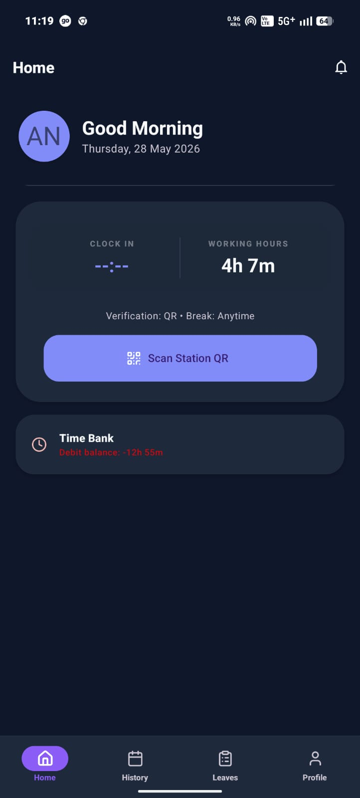
10. History Calendar logs
The Attendance History page displays your monthly attendance records on a calendar view.
Understanding Calendar Indicators:
- Green Dots: Present. Represents days with logged clock-in/out records.
- Purple Dots: Approved Leave. Represents vacation, sick leave, or comp-off days.
- Red Dots: Absent. Days without clock-in records where shifts were expected.
Day Detail Inspection:
Tapping any date displays worked duration, break times, and overtime or short-hour balances for that specific day.
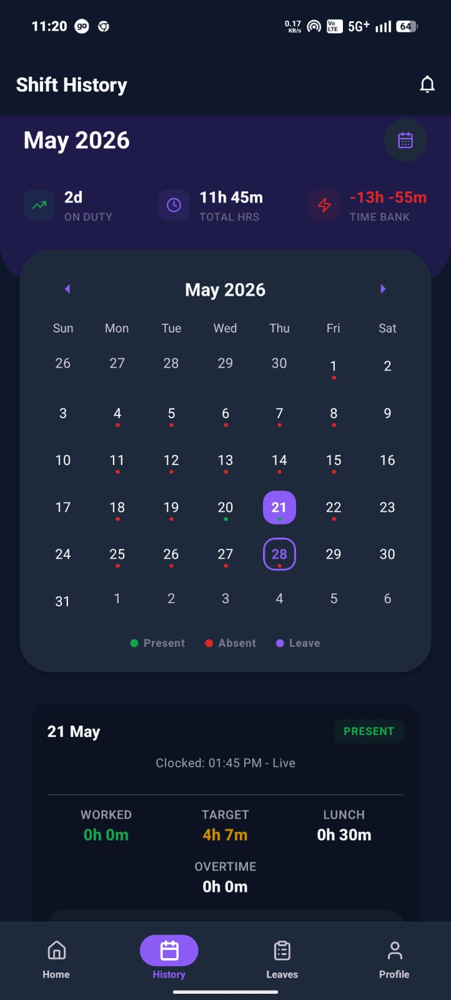
11. Leave Request Portal
Submit leave requests (Vacation, Sick Leave, Comp Off, or Emergency) and track approval statuses.
How to submit leave requests:
- Go to the **Leaves** section.
- Tap **New Leave Request**.
- Choose the **Leave Type** and select **Start & End Dates**.
- Write a brief explanation in the **Reason** text area.
- Tap **Submit Leave Application**.
Admins receive immediate push notifications to approve or reject requests. Approved vacation and sick leave allocations are automatically deducted from your balance.
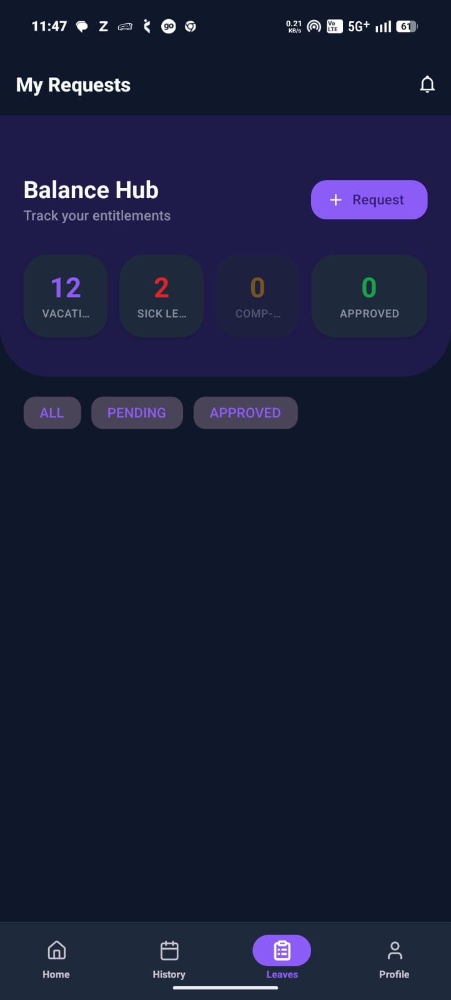
12. Profile & Time Bank Ledger
The Profile page displays employee details, allows password updates, and hosts the Time Bank ledger.
Understanding your Time Bank:
- The **Time Bank** tracks your cumulative overtime balance.
- Credits (+ Hours): Added when you work more than your contract targets or when holidays occur.
- Debits (- Hours): Deducted when you work less than your target hours, use comp-off days, or receive cash payouts.
- Balances carry forward to let you take days off in lieu later.
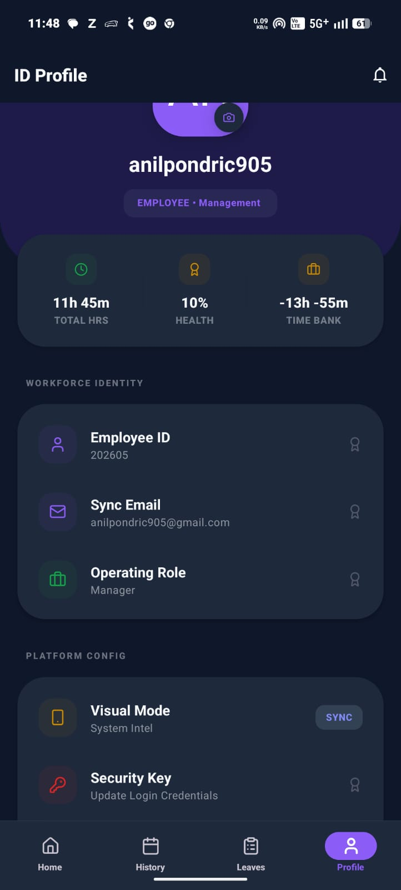
13. FAQ & How-To Guides
Q1: How do I view an employee's lunch break and the exact duration they took?
- As an Admin:
- Go to the Workforce Control tab and click the employee's name to open their Employee Detail Screen (illustrated in Overview & Device Settings).
- Scroll down to the Attendance Calendar.
- Tap on any specific date. The day's detail card directly below the calendar shows their exact **Clock-In**, **Clock-Out**, **Worked Time**, and **Break Time** (duration) taken.
- You can also view break durations directly on the Attendance Records tab where each card displays "WORKED: Xh Ym" and "BREAK: Zh Wm".
- As an Employee:
- Open your History Calendar tab.
- Tap on the date you wish to check. Below the calendar, a details box will pop up showing the exact clock-in, clock-out, manual break start/end times, and total duration.
Q2: How do I check an employee's overtime credits or negative (short) hours?
- As an Admin:
- Open the employee's **Employee Detail Screen**. Inside the **Performance Cards** section, you will see a card labeled **Time Bank** displaying their net balance (e.g.
+12.0 hrsin green for surplus overtime, or negative hours like-4.5 hrsin red for short hours). - To filter all corporate overtime logs, open the **Attendance Records** tab and select the **OT** filter chip. This highlights all records where employees clocked overtime.
- Tapping on any date in the calendar shows the exact **Shortfall** (negative minutes) or **Overtime** (extra minutes) recorded for that shift.
- Open the employee's **Employee Detail Screen**. Inside the **Performance Cards** section, you will see a card labeled **Time Bank** displaying their net balance (e.g.
- As an Employee:
- On your app's **Home Screen Dashboard** (Employee Home Screen), view the **Time Bank** status card. It shows your net credit/debit balance (e.g.
+4.5 hrs). - If you work past your shift target, a live **OVERTIME** countdown timer starts running on the clock-in card showing your accrued minutes in real-time.
- Open your **Profile Screen** to inspect the history of time adjustments, payout debits, and holiday credits in the ledger list.
- On your app's **Home Screen Dashboard** (Employee Home Screen), view the **Time Bank** status card. It shows your net credit/debit balance (e.g.
Q3: How do I find an employee's remaining vacation day balance?
- As an Admin:
- Open the **Employee Detail Screen** and scroll to the **Leave Balances** card.
- You will see detailed progress tracks showing the total days allocated, used days, and remaining balance for **Vacation** (e.g.
112h / 160h), **Sick Leave**, and **Comp-Off**.
- As an Employee:
- Navigate to your **Profile Screen** or the **Leaves Portal**. The top of the screens show clear widgets indicating your remaining balance for Vacation, Sick Leave, and Comp-Off days.
Q4: How do I manually edit, correct, or fill in attendance records?
- As an Admin:
- Go to the **Manual Attendance** tab.
- Select the **Employee** from the dropdown menu and select the **Date** of correction.
- Configure the correct **Clock In** and **Clock Out** times.
- Set the **Break/Lunch Minutes**:
- Leave Blank: The system auto-applies your organization's standard 30-minute unpaid lunch break.
- Enter Minutes: If the employee took a longer break (e.g. 2 hours), input the total minutes (e.g.
120). This ensures their actual "Worked Time" calculations are accurate.
- Add an optional **Reason** (e.g., "Forgot to check out") and inspect the **Expected Hours Preview** card which displays computed worked hours and overtime/negative hours.
- Tap **Submit Attendance Entry**. The Time Bank recalculates automatically.
Q5: How do I schedule a person based on their work percentage to calculate exact hours?
- As an Admin:
- The system handles this automatically using the employee's **Contract Percentage**. You do not need to manually compute schedules.
- Open the **Workforce Control** tab, click **Add Member** or select an existing employee, and click **Edit Member**.
- Find the **Contract Percentage** field and enter their percentage (e.g.,
100for full-time,50for half-time,80for a 4-day schedule). Click save. - The system takes the global **Base Daily Target** (e.g., 493 minutes / 8h13m) and scales it dynamically:
- 100% staff target: **493 minutes** (~8.2 hours) per day.
- 80% staff target: **394 minutes** (~6.5 hours) per day.
- 50% staff target: **247 minutes** (~4.1 hours) per day.
- When the employee clocks out, the system calculates worked minutes and compares it to their scaled target:
Worked Time - Proportional Target Time = Daily Time Bank Balance.
A positive result adds to their **Overtime Credit**, while a negative result adds to their **Short-Hours Debit (Negative Hours)**.
14. Troubleshooting Checklist
Employee Check-In Failures
- Geofence Error: Check that Location services are enabled and you are within office geofence limits.
- Camera Mismatch Alert: If you are using a new device, contact the admin to update your primary authorized device.
- QR Code Error: Ensure proper lighting when scanning physical office QR codes.
Incorrect Time Bank Calculation
- Verify whether an automatic 30-minute lunch break was deducted.
- Check that the admin has configured your correct contract percentage (e.g. 50% part-time vs 100% full-time).